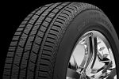

Es el conjunto de acciones y mecanismos que garantizan el buen funcionamiento de la circulación del tráfico; mediante la utilización de conocimientos y normas de conducta; bien sea como peatón, pasajero o conductor, a fin de usar correctamente la vía pública previniendo los accidentes de tráfico. Para garantizar lo que hemos dicho hay que cumplir con lo siguiente:
Es el conjunto de elementos, sistemas o conceptos de diseño incorporados en el vehículo, que le confieren un correcto comportamiento en la marcha. Ejemplos: Los neumáticos, el sistema de suspensión, sistema de frenos, la iluminación etc.
Son los elementos que reducen al mínimo los daños que se pueden producir cuando el accidente es inevitable. Ejemplos: Cinturón de Seguridad, airbags, apoyacabezas, chasis, carrocería, cristales, sistemas de Retención Infantil etc.
Circular con un vehículo en buen estado hace que mejore la seguridad vial ya que con ello tendremos menos riesgos de sufrir un accidente. En muchas ocasiones, un incorrecto mantenimiento del vehículo puede provocar más de un susto al automovilista.
A la hora de hablar de conducción autónoma hay que tener en cuenta los distintos niveles o categorías en las que se puede enmarcar su autonomía. Ejemplos: Cuentan con un cerebro virtual (el encargado de identificar la situación y, entonces, accionar). Tienen sensores, cámara y radares, dichos sensores pueden ver en 360ª con un alcance amplio, aproximadamente la distancia es de dos campos de fútbol. Pueden detectar objetos en todas las direcciones, etc.
Aquí os muesto un vídeo de un accidente de tráfico por no respetar los límites de velocidad. Cuando hablamos de no respetarlos nos referimos a exceder la velocidad o ir por debajo de la velocidad.